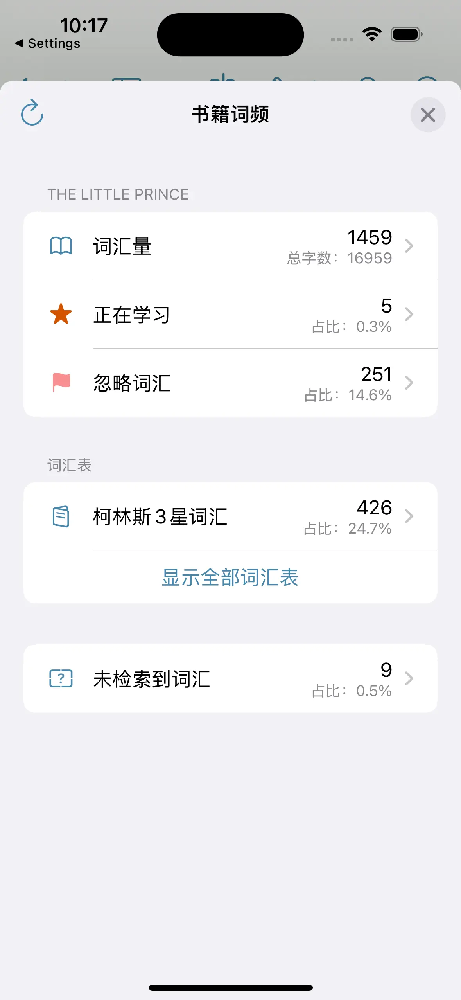

在閱讀過程中，想知道書中哪些詞出現得最多？哪些詞是關鍵詞？我們的詞頻統計功能幫助您輕鬆掌握書籍的核心詞彙，提升閱讀理解和語言學習效率。


如何開啟
要分析書籍詞彙，請按照以下步驟操作：
- 打開您想要閱讀的電子書。
- 點擊螢幕頂部選單欄的
 。若選單欄中未顯示該圖示，請點擊右側的更多按鈕
。若選單欄中未顯示該圖示，請點擊右側的更多按鈕  ，並選擇「全書詞頻」以分析整本書的詞頻，或「章節詞頻」分析當前章節的詞頻。
，並選擇「全書詞頻」以分析整本書的詞頻，或「章節詞頻」分析當前章節的詞頻。

功能說明
在詞頻分析過程中，我們會依據以下流程將單詞劃分為五個類別，並統計每個類別的單詞數量及其占總詞彙量的比例。其中，總詞彙量指這五個類別的單詞總和。
flowchart TD
A[開始] --> B{是否在詞典中查找到？}
B --> |是| C{是否在忽略詞彙表中？}
B --> |否| D[未檢索到]
C --> |是| E[已忽略]
C --> |否| F{是否標記為認識？}
F --> |是| G[已認識]
F --> |否| H{是否已加入學習？}
H --> |是| I[正在學習]
H --> |否| J[待學習]
此外，我們還會統計生詞表中包含的書中單詞數，並計算其占比，幫助使用者更直觀地了解生詞表的詞彙覆蓋情況。
單詞分類說明
-
待學習
詞典中可查找到，且尚未被標記的單詞。在此列表中，
– 點擊 可將單詞標記為已認識。
可將單詞標記為已認識。
– 點擊 可將單詞加入正在學習。
可將單詞加入正在學習。
– 顯示單詞在書中的出現次數。點擊數字可查看所有包含該單詞的句子。
– 單詞按照出現次數進行排名。排名第 1 的單詞為書中出現頻率最高的單詞。
– 可根據 頻次、單詞、排名、長度、位置 對單詞進行排序，方便篩選和管理。 -
正在學習
已加入學習的單詞。 -
已認識
已被標記為認識的單詞。 -
已忽略
在忽略詞彙表中的單詞。 -
未檢索到
在詞典中未查找到的單詞。